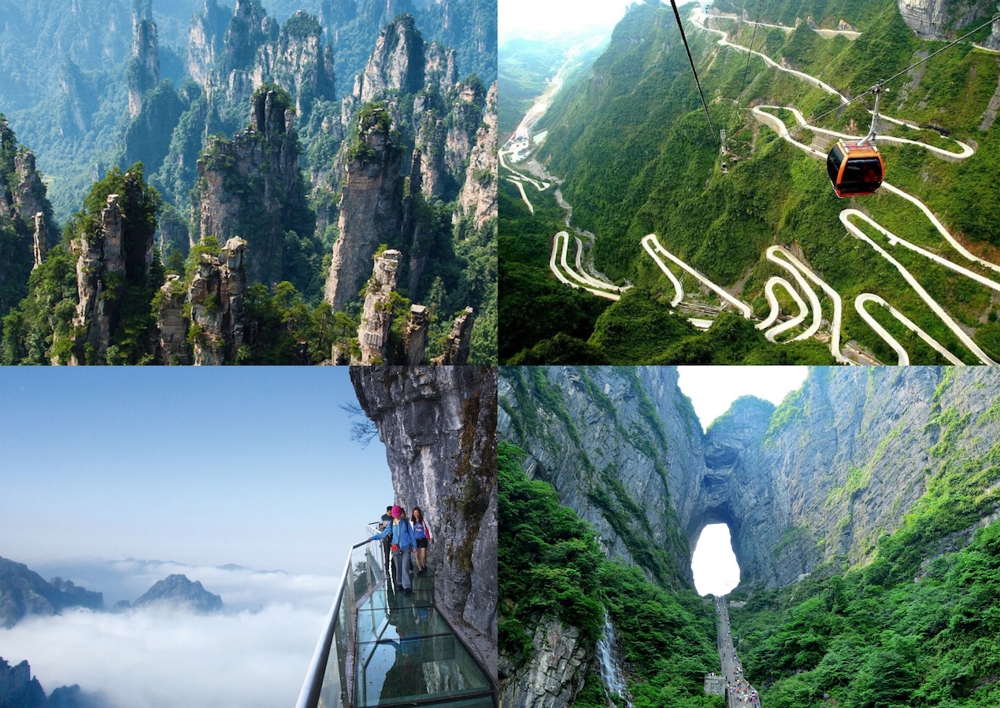
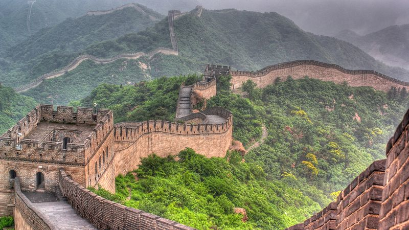

The Most top five Best Places In The China
Forbidden City

Location: Beijing.
Best Time to Visit: March-May or September-October.
Info: Once home to emperors, this UNESCO site is a treasure trove of Chinese history and culture.
Zhangjiajie National Park

Location: Hunan Province.
Best Time to Visit: September-November.
Info: Famous for its towering sandstone peaks, this park inspired the floating mountains in Avatar.
Guilin and Yungshuo

Location:Guangxi province
Info:Guilin a major tourist city in china,is known for the it"s karst land scapes
and it is hb for transportation in china
Great wall Of China

Location: Near Beijing.
Best Time to Visit: April-May or September-October.
Info: A global architectural marvel stretching over 13,000 miles, showcasing China’s historical ingenuity.
Terracotta Army

Location: Xi’an, Shaanxi Province.
Best Time to Visit: March-May or September-November.
Info: Thousands of life-sized terracotta soldiers guarding the tomb of China’s first emperor.